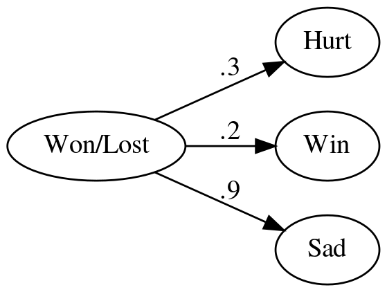
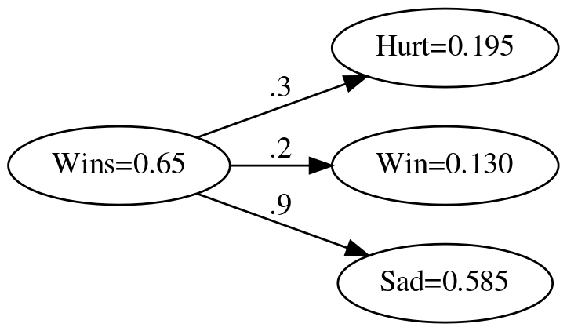

How do you handle multiple outputs?
Table of Contents
Preliminaries
Imports
From Python
from pathlib import Path
from typing import List
From PyPi
from graphviz import Digraph
import numpy
Set Up
The Output Folder
This is where to put rendered images.
PATH = Path("../../../files/posts/grokking/03_forward_propagation/how-do-you-handle-multiple-outputs/")
Data Types
Vector = List[float]
Beginning
What is this?
This is a continuation of my notes on Chapter Three of "Grokking Deep Learning". In the previous post we looked at a simple neural network with three inputs and one output. Here we'll look at handling multiple outputs.
How do you handle one input and multiple outputs?
Suppose instead of using multiple inputs to predict an outcome (like winning) you instead had a single input and multiple outputs (like what percentage feels sad, or indifferent based on whether you won or lost as well as whether you will win). You could create a network to represent it something like this.
graph = Digraph(comment="Feelings Model", format="png", graph_attr={"rankdir": "LR", "dpi": "200"})
graph.node("A", "Won/Lost")
graph.node("B", "Hurt")
graph.node("C", "Win")
graph.node("D", "Sad")
graph.edge("A", "B", label=".3" )
graph.edge("A", "C", label=".2" )
graph.edge("A", "D", label=".9" )
graph.render(PATH/"feelings_model.dot")
graph

How do you implement this?
In this case the outputs are simply the (single) input times the weight of the output, so while the single output was the dot-product of the inputs and the weights, this, the multiple output case, is an elementwise multiplication of the input and the weights.
def elementwise_multiplication(scalar: float, weights: Vector) -> Vector:
"""multiplies the value against each of the weights
Returns:
output: scalar times each of the weights as a list
"""
return [scalar * weights[index] for index in range(len(weights))]
In Action
Here's some sample values that we can use to see what this network gives us. Our input is the fraction of the games won up to a given week and our outputs are the fraction of players that are hurt, the probability that they won or lost, and whether the players are happy or sad.
labels = "Hurt Win Sad".split()
weights = [0.3, 0.2, 0.9]
fraction_of_wins = [0.65, 0.8, 0.8, 0.9]
These are the probabilities of a fan feeling a certain way the first week.
wins = fraction_of_wins[0]
expected = [0.195, 0.13, 0.585]
actual = elementwise_multiplication(wins, weights)
tolerance = 0.1**5
for index, item in enumerate(actual):
assert abs(expected[index] - item) < tolerance
graph = Digraph(comment="Feelings Model", format="png", graph_attr={"rankdir": "LR", "dpi": "200"})
graph.node("A", f"Wins={wins}")
graph.node("B", f"Hurt={actual[0]:.3f}")
graph.node("C", f"Win={actual[1]:.3f}")
graph.node("D", f"Sad={actual[2]:.3f}")
graph.edge("A", "B", label=".3" )
graph.edge("A", "C", label=".2" )
graph.edge("A", "D", label=".9" )
graph.render(PATH/"feelings_model_with_output.dot")
print("[[file:feelings_model_with_output.dot.png]]")

How would you do this with numpy?
Since this is just element-wise multiplication, all you have to do is create an array and then multiply it by the scalar input.
vector_weights = numpy.array(weights)
actual = vector_weights * wins
vector_expected = numpy.array(expected)
numpy.testing.assert_allclose(actual, expected)
graph = Digraph(comment="Feelings Model", format="png", graph_attr={"rankdir": "LR", "dpi": "200"})
graph.node("A", f"Wins={wins}")
graph.node("B", f"Hurt={actual[0]:.3f}")
graph.node("C", f"Win={actual[1]:.3f}")
graph.node("D", f"Sad={actual[2]:.3f}")
graph.edge("A", "B", label=".3" )
graph.edge("A", "C", label=".2" )
graph.edge("A", "D", label=".9" )
graph.render(PATH/"numpy_feelings_model_with_output.dot")
print("[[file:numpy_feelings_model_with_output.dot.png]]")

Pytorch?
Like numpy, pytorch uses the multiplication operator for element-wise multiplication.
device = torch.device("cuda") if torch.cuda.is_available() else torch.device("cpu")
weights_vector = torch.tensor(weights, device=device)
actual = (weights_vector * wins).tolist()
numpy.testing.assert_allclose(actual, expected)
graph = Digraph(comment="Feelings Model", format="png", graph_attr={"rankdir": "LR", "dpi": "200"})
graph.node("A", f"Wins={wins}")
graph.node("B", f"Hurt={actual[0]:.3f}")
graph.node("C", f"Win={actual[1]:.3f}")
graph.node("D", f"Sad={actual[2]:.3f}")
graph.edge("A", "B", label=".3" )
graph.edge("A", "C", label=".2" )
graph.edge("A", "D", label=".9" )
graph.render(PATH/"pytorch_feelings_model_with_output.dot")
print("[[file:pytorch_feelings_model_with_output.dot.png]]")

End
So that's it for handling multiple outputs from a node to multiple nodes. As with the many inputs to one node what you're really doing is vector math, when reducing from many to one you use the dot product and when going from one to many you use scalar multiplication.